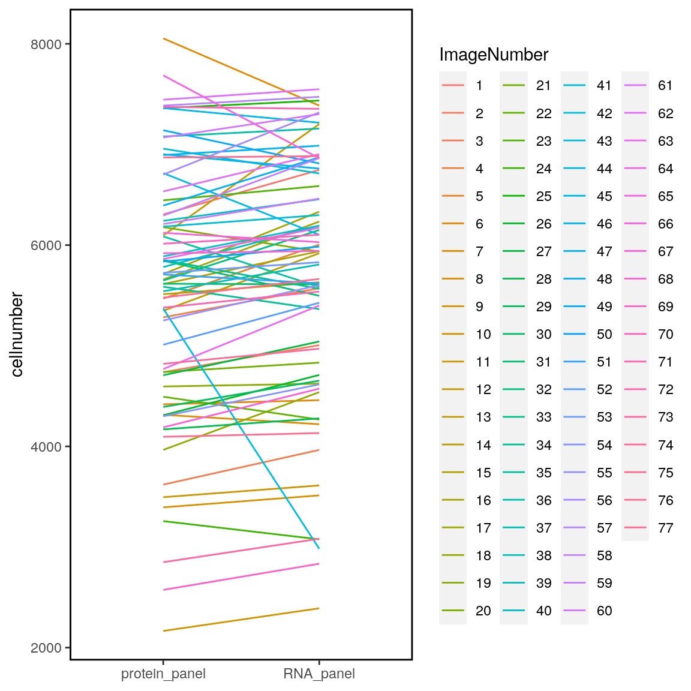
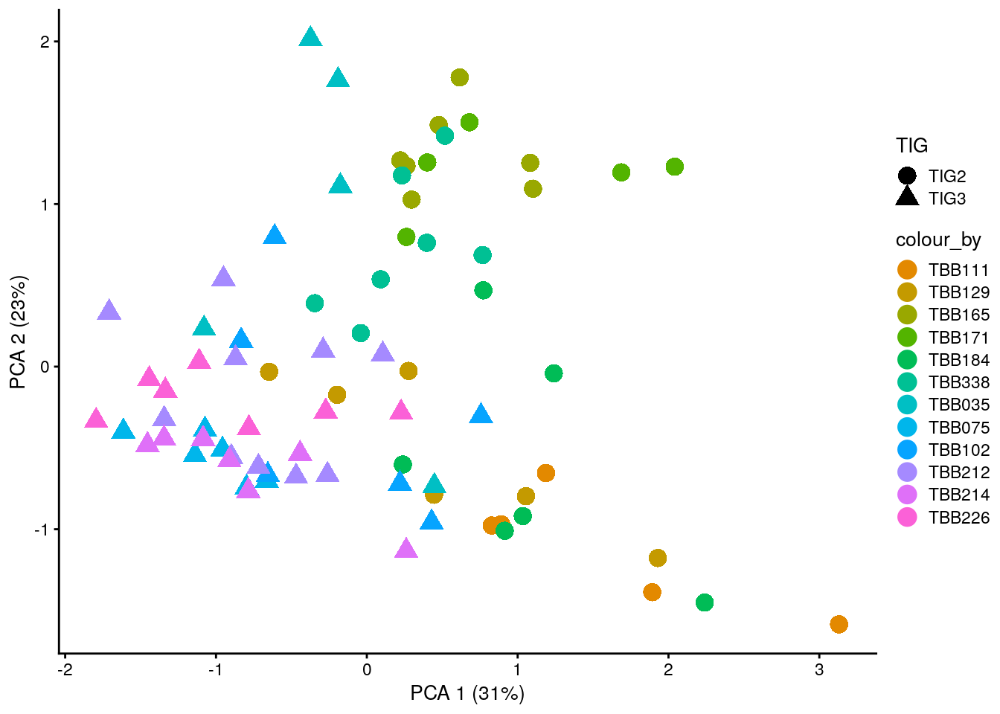
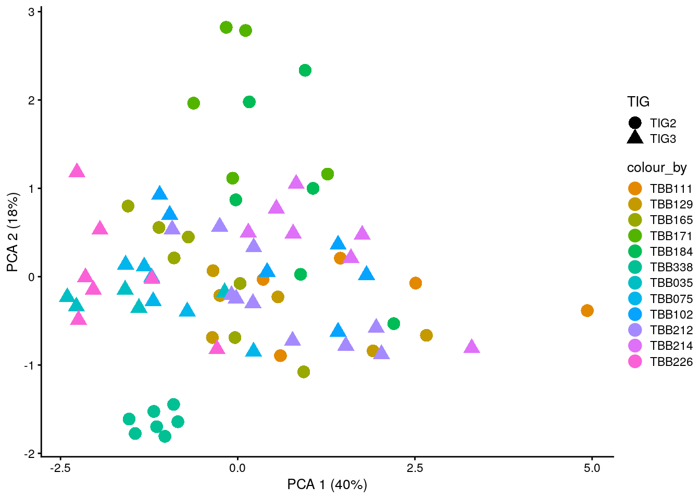

01_quality_control
SandraTietscher
2020-10-21
Last updated: 2020-10-23
Checks: 7 0
Knit directory: BCexh_IMC/
This reproducible R Markdown analysis was created with workflowr (version 1.6.2). The Checks tab describes the reproducibility checks that were applied when the results were created. The Past versions tab lists the development history.
Great! Since the R Markdown file has been committed to the Git repository, you know the exact version of the code that produced these results.
Great job! The global environment was empty. Objects defined in the global environment can affect the analysis in your R Markdown file in unknown ways. For reproduciblity it’s best to always run the code in an empty environment.
The command set.seed(12345) was run prior to running the code in the R Markdown file. Setting a seed ensures that any results that rely on randomness, e.g. subsampling or permutations, are reproducible.
Great job! Recording the operating system, R version, and package versions is critical for reproducibility.
Nice! There were no cached chunks for this analysis, so you can be confident that you successfully produced the results during this run.
Great job! Using relative paths to the files within your workflowr project makes it easier to run your code on other machines.
Great! You are using Git for version control. Tracking code development and connecting the code version to the results is critical for reproducibility.
The results in this page were generated with repository version b75ae4d. See the Past versions tab to see a history of the changes made to the R Markdown and HTML files.
Note that you need to be careful to ensure that all relevant files for the analysis have been committed to Git prior to generating the results (you can use wflow_publish or wflow_git_commit). workflowr only checks the R Markdown file, but you know if there are other scripts or data files that it depends on. Below is the status of the Git repository when the results were generated:
Ignored files:
Ignored: analysis/.Rhistory
Untracked files:
Untracked: analysis/05_proteinPanel_StromalSubclustering.Rmd
Untracked: data/ProteinPanel_tumor_stroma_clusters.csv
Untracked: data/RNApanel_TNK_clusters.csv
Untracked: data/RNApanel_stromal_clusters.csv
Untracked: data/RNApanel_tumor_stroma_clusters.csv
Untracked: output/ProteinPanel/
Untracked: output/RNApanel/
Untracked: output/sce_ProteinPanel_afterQC.rds
Untracked: output/sce_ProteinPanel_initial.rds
Untracked: output/sce_RNApanel_afterQC.rds
Untracked: output/sce_RNApanel_initial.rds
Note that any generated files, e.g. HTML, png, CSS, etc., are not included in this status report because it is ok for generated content to have uncommitted changes.
These are the previous versions of the repository in which changes were made to the R Markdown (analysis/01_quality_control.Rmd) and HTML (docs/01_quality_control.html) files. If you’ve configured a remote Git repository (see ?wflow_git_remote), click on the hyperlinks in the table below to view the files as they were in that past version.
| File | Version | Author | Date | Message |
|---|---|---|---|---|
| Rmd | b75ae4d | SandraTietscher | 2020-10-23 | Add script for stromal subclustering for RNA panel |
| html | 1fe88dd | SandraTietscher | 2020-10-22 | Build site. |
| Rmd | f63a7fa | SandraTietscher | 2020-10-22 | Add QC file |
Introduction
This script visualizes different features of the data and flags cells that need to be potentially removed before further analysing the data.
Load libraries and data
First, we will load the needed libraries and the SingleCellExperiment object, that was created in the previous section.
# Load libraries
library(ggplot2)
library(ggridges)
library(SingleCellExperiment)
library(scater)
library(viridis)
library(RColorBrewer)
library(cowplot)
library(dittoSeq)
library(scales)
library(tidyverse)
library(ggpubr)
# Read SingleCellExperiment object
sce_RNA <- readRDS(paste0(getwd(), "/output/sce_RNApanel_initial.rds"))
sce_protein <- readRDS(paste0(getwd(), "/output/sce_ProteinPanel_initial.rds"))
# Give the cells unique names across panels
colnames(sce_RNA) <- paste0("R_", colnames(sce_RNA))
colnames(sce_protein) <- paste0("H_", colnames(sce_protein))
## reorder patient levels
sce_RNA$sample <- as.factor(sce_RNA$sample)
old.levels <- levels(sce_RNA$sample)
sce_RNA$sample <- factor(sce_RNA$sample, levels = old.levels[c(4:8, 12, 1:3, 9:11)])
sce_protein$sample <- factor(sce_protein$sample, levels = levels(sce_RNA$sample))Transform the data
Different data transformations are stored in different assay slots:
arcsinh transformation -> exprs slot
scaled arcsinh transformation -> scaled slot
simple 0-1 normalization (using 99th percentile as 1) -> normalized slot
# for RNA panel
assay(sce_RNA, "exprs") <- asinh(counts(sce_RNA))
assay(sce_RNA, "scaled") <- t(scale(t(assay(sce_RNA, "exprs"))))
norm_counts <- t(apply(assay(sce_RNA, "counts"), 1, function(x)(x-min(x))/(quantile(x, 0.99)-min(x))))
norm_counts <- t(apply(norm_counts, 1, function(x) pmin(x, 1)))
assay(sce_RNA, "normalized", withDimnames = FALSE) <- norm_counts
# for Protein panel
assay(sce_protein, "exprs") <- asinh(counts(sce_protein))
assay(sce_protein, "scaled") <- t(scale(t(assay(sce_protein, "exprs"))))
norm_counts <- t(apply(assay(sce_protein, "counts"), 1, function(x)(x-min(x))/(quantile(x, 0.99)-min(x))))
norm_counts <- t(apply(norm_counts, 1, function(x) pmin(x, 1)))
assay(sce_protein, "normalized", withDimnames = FALSE) <- norm_countsVisualize image-level information
Number of cells
First, we will visualize the number of cells across various cell-level metadata entries:
1. Number of cells per sample
RNA_cellnumber <- table(sce_RNA$sample, sce_RNA$cellnumber) %>% rowSums()
protein_cellnumber <- table(sce_protein$sample, sce_protein$cellnumber) %>% rowSums()
df <- data.frame(sample = levels(sce_RNA$sample), RNA_panel = RNA_cellnumber, protein_panel = protein_cellnumber)
df <- pivot_longer(df, 2:3, names_to = "panel", values_to = "cellnumber")
ggplot(df, aes(panel, cellnumber))+
geom_line(aes(group=sample, color = sample))+
theme(axis.title.x = element_blank(),
panel.background = element_blank(),
strip.background = element_blank(),
legend.background = element_blank(),
panel.border = element_rect(color = "black", fill = NA, size = 1))
| Version | Author | Date |
|---|---|---|
| 1fe88dd | SandraTietscher | 2020-10-22 |
2. Number of cells per image
RNA_cellnumber <- table(sce_RNA$ImageNumber, sce_RNA$cellnumber) %>% rowSums()
protein_cellnumber <- table(sce_protein$ImageNumber, sce_protein$cellnumber) %>% rowSums()
df <- data.frame(ImageNumber = levels(sce_RNA$ImageNumber), RNA_panel = RNA_cellnumber, protein_panel = protein_cellnumber)
df <- pivot_longer(df, 2:3, names_to = "panel", values_to = "cellnumber")
ggplot(df, aes(panel, cellnumber))+
geom_line(aes(group=ImageNumber, color = ImageNumber))+
theme(axis.title.x = element_blank(),
panel.background = element_blank(),
strip.background = element_blank(),
legend.background = element_blank(),
panel.border = element_rect(color = "black", fill = NA, size = 1))
| Version | Author | Date |
|---|---|---|
| 1fe88dd | SandraTietscher | 2020-10-22 |
Mean marker intensities
Next step: Visualization of the mean marker intensites per image, sample, ROI and TLS status. For this, we will use the aggregateAcrossCells function of the scater package, which returns a SingleCellExperiment object for further downstream processing. We will arcsinh transform the mean intensity values prior to plotting.
mean_sce_RNA <- aggregateAcrossCells(sce_RNA, ids = DataFrame(sample2 = sce_RNA$sample, ROI = sce_RNA$ROI, TLS = sce_RNA$TLS), average = TRUE)
colnames(mean_sce_RNA) <- mean_sce_RNA$ImageNumber
assay(mean_sce_RNA, "arcsinh") <- asinh(assay(mean_sce_RNA, "counts"))
mean_sce_RNA$sample <- as.character(mean_sce_RNA$sample)
mean_sce_protein <- aggregateAcrossCells(sce_protein, ids = DataFrame(sample2 = sce_protein$sample, ROI = sce_protein$ROI, TLS = sce_protein$TLS), average = TRUE)
colnames(mean_sce_protein) <- mean_sce_protein$ImageNumber
assay(mean_sce_protein, "arcsinh") <- asinh(assay(mean_sce_protein, "counts")) Now, we can use the dittoHeatmap from the dittoSeq package to visualize the arcsinh-transformed mean intensities and the scaled, arcsinh-transformed mean intensities per group.
RNA panel
# Non-scaled
dittoHeatmap(mean_sce_RNA, assay = "arcsinh",
annot.by = c("sample2", "TIG", "TLS"),
scale = "none", heatmap.colors = viridis(100),
cluster_cols = TRUE,
annotation_colors = list(sample2 = metadata(sce_RNA)$colour_vectors$sample,
TIG = metadata(sce_RNA)$colour_vectors$TIG,
TLS = metadata(sce_RNA)$colour_vectors$TLS))
| Version | Author | Date |
|---|---|---|
| 1fe88dd | SandraTietscher | 2020-10-22 |
# Centered and scaled
dittoHeatmap(mean_sce_protein, assay = "arcsinh",
annot.by = c("sample2", "TIG", "TLS"),
cluster_cols = TRUE, heatmap.colors = colorRampPalette(c("dark blue", "white", "dark red"))(100),
annotation_colors = list(sample2 = metadata(sce_RNA)$colour_vectors$sample,
TIG = metadata(sce_RNA)$colour_vectors$TIG,
TLS = metadata(sce_RNA)$colour_vectors$TLS),
breaks = seq(-3, 3, length.out = 101))
| Version | Author | Date |
|---|---|---|
| 1fe88dd | SandraTietscher | 2020-10-22 |
Protein panel
# Non-scaled
dittoHeatmap(mean_sce_protein, assay = "arcsinh",
annot.by = c("sample2", "TIG", "TLS"),
scale = "none", heatmap.colors = viridis(100),
cluster_cols = TRUE,
annotation_colors = list(sample2 = metadata(sce_protein)$colour_vectors$sample,
TIG = metadata(sce_protein)$colour_vectors$TIG,
TLS = metadata(sce_protein)$colour_vectors$TLS))
| Version | Author | Date |
|---|---|---|
| 1fe88dd | SandraTietscher | 2020-10-22 |
# Centered and scaled
dittoHeatmap(mean_sce_protein, assay = "arcsinh",
annot.by = c("sample2", "TIG", "TLS"),
cluster_cols = TRUE, heatmap.colors = colorRampPalette(c("dark blue", "white", "dark red"))(100),
annotation_colors = list(sample2 = metadata(sce_protein)$colour_vectors$sample,
TIG = metadata(sce_protein)$colour_vectors$TIG,
TLS = metadata(sce_protein)$colour_vectors$TLS),
breaks = seq(-3, 3, length.out = 101))
| Version | Author | Date |
|---|---|---|
| 1fe88dd | SandraTietscher | 2020-10-22 |
Low-dimensional representation of image-level information
Next, we can use the summarized SingleCellExperiment object to compute low-dimensional representations of image-level median intensity counts. For this, we will use a PCA representation of the images.
# Principal component analysis
mean_sce_RNA <- runPCA(mean_sce_RNA, exprs_values = "arcsinh", ncomponents = 10,
subset_row = !(rownames(mean_sce_RNA) %in% c("DNA1", "DNA2", "HH3")))
plotPCA(mean_sce_RNA, colour_by = "sample2", shape_by = "TIG",
point_alpha = 1, point_size = 4) +
scale_colour_manual(values = metadata(sce_RNA)$colour_vectors$sample)
| Version | Author | Date |
|---|---|---|
| 1fe88dd | SandraTietscher | 2020-10-22 |
# Principal component analysis
mean_sce_protein <- runPCA(mean_sce_protein, exprs_values = "arcsinh", ncomponents = 10,
subset_row = !(rownames(mean_sce_protein) %in% c("DNA1", "DNA2", "HH3")))
plotPCA(mean_sce_protein, colour_by = "sample2", shape_by = "TIG",
point_alpha = 1, point_size = 4) +
scale_colour_manual(values = metadata(sce_protein)$colour_vectors$sample)
| Version | Author | Date |
|---|---|---|
| 1fe88dd | SandraTietscher | 2020-10-22 |
Visualize cell-level information
Here, we will visualize the distributions of cell-level metadata and intensity values. First, we will display the distribution of cell size, check if small cells are still included and flag them for downstream analysis.
# Count and remove cells smaller than 7 pixels
sum(sce_RNA$Area <= 7)[1] 4024sce_RNA$include <- sce_RNA$Area > 7
sce_RNA <- sce_RNA[, which(sce_RNA$include == TRUE)]
sum(sce_protein$Area <= 7)[1] 3634sce_protein$include <- sce_protein$Area > 7
sce_protein <- sce_protein[, which(sce_protein$include == TRUE)]
# Count and remove cells larger than 600 pixels
sum(sce_RNA$Area > 600)[1] 31sce_RNA$include <- sce_RNA$Area <= 600
sce_RNA <- sce_RNA[, which(sce_RNA$include == TRUE)]
sum(sce_protein$Area > 600)[1] 12sce_protein$include <- sce_protein$Area <= 600
sce_protein <- sce_protein[, which(sce_protein$include == TRUE)]Average cell size per panel
colData_comb <- bind_rows(as.data.frame(colData(sce_RNA)), as.data.frame(colData(sce_protein)))
ggplot(colData_comb, aes(x = as.factor(panel_type), y = Area)) +
geom_violin()+
geom_boxplot(outlier.size = 0.5, width = 0.2) +
theme(panel.background = element_blank(),
panel.grid.major = element_blank(),
axis.text.x = element_text(angle = 45, hjust = 1))
| Version | Author | Date |
|---|---|---|
| 1fe88dd | SandraTietscher | 2020-10-22 |
Average cell size per sample
ggplot(colData_comb, aes(x = as.factor(panel_type), y = Area, fill = panel_type)) +
geom_violin()+
geom_boxplot(outlier.size = 0.5, width = 0.2)+
scale_fill_manual(values = c("red", "skyblue"))+
facet_wrap(~sample, ncol = 6)+
theme(panel.background = element_blank(),
panel.grid.major = element_blank(),
axis.text.x = element_text(angle = 45, hjust = 1))
| Version | Author | Date |
|---|---|---|
| 1fe88dd | SandraTietscher | 2020-10-22 |
Distribution of marker intensities
# sample
multi_dittoPlot(sce_RNA, vars = rownames(sce_RNA), group.by = "sample", plots = c("ridgeplot"), assay = "exprs", ncol = 22) +
scale_colour_manual(values = metadata(sce_RNA)$colour_vectors$sample)
| Version | Author | Date |
|---|---|---|
| 1fe88dd | SandraTietscher | 2020-10-22 |
NULLSave updated objects
saveRDS(sce_RNA, paste0(getwd(), "/output/sce_RNApanel_afterQC.rds"))
saveRDS(sce_protein, paste0(getwd(), "/output/sce_ProteinPanel_afterQC.rds"))
sessionInfo()R version 4.0.2 (2020-06-22)
Platform: x86_64-pc-linux-gnu (64-bit)
Running under: Ubuntu 20.04 LTS
Matrix products: default
BLAS/LAPACK: /usr/lib/x86_64-linux-gnu/openblas-openmp/libopenblasp-r0.3.8.so
locale:
[1] LC_CTYPE=en_US.UTF-8 LC_NUMERIC=C
[3] LC_TIME=en_US.UTF-8 LC_COLLATE=en_US.UTF-8
[5] LC_MONETARY=en_US.UTF-8 LC_MESSAGES=C
[7] LC_PAPER=en_US.UTF-8 LC_NAME=C
[9] LC_ADDRESS=C LC_TELEPHONE=C
[11] LC_MEASUREMENT=en_US.UTF-8 LC_IDENTIFICATION=C
attached base packages:
[1] parallel stats4 stats graphics grDevices utils datasets
[8] methods base
other attached packages:
[1] ggpubr_0.4.0 forcats_0.5.0
[3] stringr_1.4.0 dplyr_1.0.1
[5] purrr_0.3.4 readr_1.3.1
[7] tidyr_1.1.1 tibble_3.0.3
[9] tidyverse_1.3.0 scales_1.1.1
[11] dittoSeq_1.0.2 cowplot_1.0.0
[13] RColorBrewer_1.1-2 viridis_0.5.1
[15] viridisLite_0.3.0 scater_1.16.2
[17] SingleCellExperiment_1.10.1 SummarizedExperiment_1.18.2
[19] DelayedArray_0.14.1 matrixStats_0.56.0
[21] Biobase_2.48.0 GenomicRanges_1.40.0
[23] GenomeInfoDb_1.24.2 IRanges_2.22.2
[25] S4Vectors_0.26.1 BiocGenerics_0.34.0
[27] ggridges_0.5.2 ggplot2_3.3.2
[29] workflowr_1.6.2
loaded via a namespace (and not attached):
[1] ggbeeswarm_0.6.0 colorspace_1.4-1
[3] ggsignif_0.6.0 ellipsis_0.3.1
[5] rio_0.5.16 rprojroot_1.3-2
[7] XVector_0.28.0 BiocNeighbors_1.6.0
[9] fs_1.5.0 rstudioapi_0.11
[11] farver_2.0.3 ggrepel_0.8.2
[13] fansi_0.4.1 lubridate_1.7.9
[15] xml2_1.3.2 knitr_1.29
[17] jsonlite_1.7.0 broom_0.7.0
[19] dbplyr_1.4.4 pheatmap_1.0.12
[21] compiler_4.0.2 httr_1.4.2
[23] backports_1.1.8 assertthat_0.2.1
[25] Matrix_1.2-18 limma_3.44.3
[27] cli_2.0.2 later_1.1.0.1
[29] BiocSingular_1.4.0 htmltools_0.5.0
[31] tools_4.0.2 rsvd_1.0.3
[33] gtable_0.3.0 glue_1.4.1
[35] GenomeInfoDbData_1.2.3 Rcpp_1.0.5
[37] carData_3.0-4 cellranger_1.1.0
[39] vctrs_0.3.2 DelayedMatrixStats_1.10.1
[41] xfun_0.16 openxlsx_4.1.5
[43] rvest_0.3.6 lifecycle_0.2.0
[45] irlba_2.3.3 rstatix_0.6.0
[47] edgeR_3.30.3 zlibbioc_1.34.0
[49] hms_0.5.3 promises_1.1.1
[51] yaml_2.2.1 curl_4.3
[53] gridExtra_2.3 stringi_1.4.6
[55] zip_2.0.4 BiocParallel_1.22.0
[57] rlang_0.4.7 pkgconfig_2.0.3
[59] bitops_1.0-6 evaluate_0.14
[61] lattice_0.20-41 labeling_0.3
[63] tidyselect_1.1.0 plyr_1.8.6
[65] magrittr_1.5 R6_2.4.1
[67] generics_0.0.2 DBI_1.1.0
[69] foreign_0.8-80 pillar_1.4.6
[71] haven_2.3.1 whisker_0.4
[73] withr_2.2.0 abind_1.4-5
[75] RCurl_1.98-1.2 modelr_0.1.8
[77] crayon_1.3.4 car_3.0-8
[79] rmarkdown_2.3 locfit_1.5-9.4
[81] grid_4.0.2 readxl_1.3.1
[83] data.table_1.13.0 blob_1.2.1
[85] git2r_0.27.1 reprex_0.3.0
[87] digest_0.6.25 httpuv_1.5.4
[89] munsell_0.5.0 beeswarm_0.2.3
[91] vipor_0.4.5